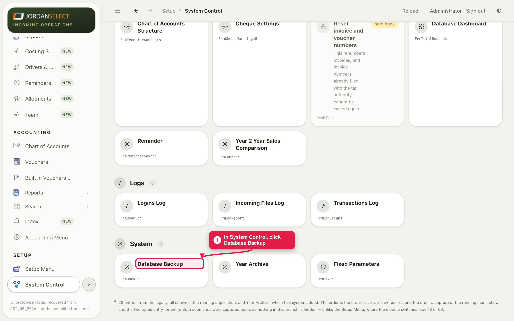
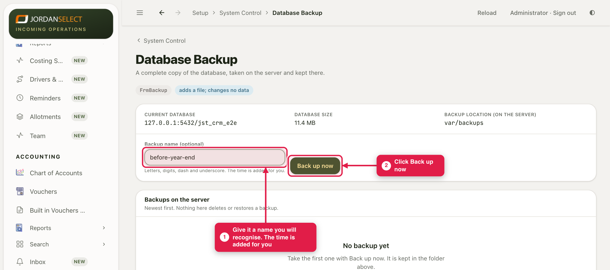

Take a complete copy of the database before anything big: closing the year, a large import, an update to the CRM.
WhoThe administrator
WhereSetup → System Control → Database Backup
Takes1 minute
You needA name for the backup (optional)
How it works
The server copies the whole database into its own backup folder. Nothing on this screen changes, deletes or restores data. Putting a backup back is done on the server by whoever looks after it.
Example in this guide: a backup named before-year-end, taken before closing the year.
1. Open the screen
1
Click System Control, then the Database Backup tile.

Under System, near the bottom of System Control.
2. Take the backup
2
Type a Backup name that says why you took it. Use letters, digits, dashes and underscores only. The date and time are added for you.
3
Click Back up now. It reads “Taking backup…” until it is done.

The top row shows which database is copied, its size, and the folder on the server.
4
The backup appears under Backups on the server, newest first, with the time it was taken and its size. Click Download to keep a copy on your own computer as well.
Keep one copy off the serverA backup that only exists on the server is lost with the server. Download the important ones, such as before-year-end, and keep them somewhere safe.
When to take one
Before closing a year or a period.
Before importing a large file (vouchers, a chart of accounts, opening balances).
Before the CRM is updated.
Last checked: ____ · Screens shown are from a test copy of the CRM with made-up data.